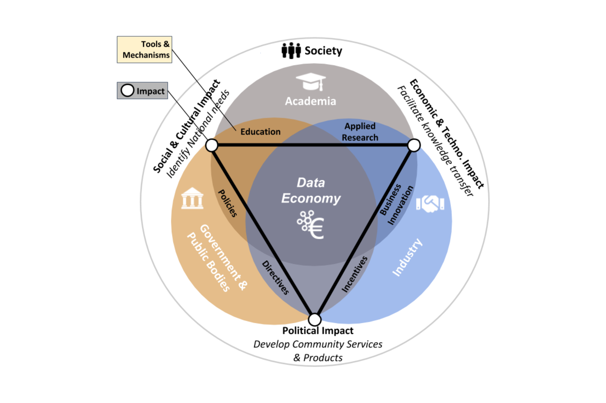
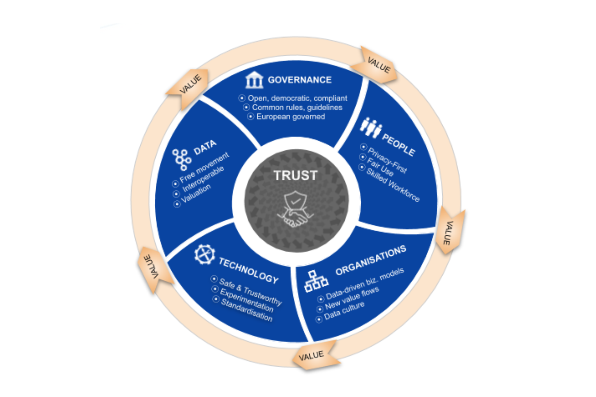

Reader
![]()
Semantic web
Bibliography file: wikidata.bib ❔ How to work with bibliographies.
Semantic web
- Tutorial on Semantic Web (PDF presentation): The semantic web is a decentralized platform (a layer of the internet) for distributed knowledge (Herman 2012)
Further reading:
Ontology
Ontology Development 101: A Guide to Creating Your First Ontology An ontology defines a common vocabulary for researchers who need to share information in a domain. It includes machine-interpretable definitions of basic concepts in the domain and relations among them. (Noy and McGuinness 2001)
The Artificial-Intelligence literature contains many definitions of an ontology; many of these contradict one another. For the purposes of this guide an ontology is a formal explicit description of concepts in a domain of discourse [such as film production] (classes (sometimes called concepts1)), properties of each concept describing various features and attributes of the concept (slots (sometimes called roles or properties2)), and restrictions on slots (facets (sometimes called role restrictions3)). An ontology together with a set of individual instances 4of classes constitutes a knowledge base. In reality, there is a fine line where the ontology ends and the knowledge base begins.
RDF
What is RDF: RDF is the Word Wide Web (W3C) global standard to encode knowledge, for example, to be distributed on the semantic web layer of the internet.
In the context of knowledge sharing, I use the term ontology to mean a specification of a conceptualisation. That is, an ontology is a description (like a formal specification of a program) of the concepts and relationships that can exist for an agent or a community of agents. This definition is consistent with the usage of ontology as set-of-concept-definitions, but more general. And it is certainly a different sense of the word than its use in philosophy. Tom Gruber, 1993.
Dataspaces
Bibliography file: wikidata.bib ❔ How to work with bibliographies.
Dataspaces: Fundamentals, Principles, and Technique: “A dataspace is an emerging approach to data management which recognises that in large-scale integration scenarios, involving thousands of data sources, it is difficult and expensive to obtain an upfront unifying schema across all sources. Data is integrated on an `as-needed’ basis with the labour-intensive aspects of data integration postponed until they are required. Dataspaces reduce the initial effort required to set up data integration by relying on automatic matching and mapping generation techniques.” (Curry 2020)
Dataspace for Cultural and Creative Industries (Position paper): “A data space is an ecosystem of exchange, processing, sharing and provision of data between trusted partners, for a fee or not. It is not about copying or repatriating data centrally, but about ensuring that each data holder has full control over the conditions (e.g., who, when, and under what condition) of access to their data.” (EBU and Gaia-X 2022, p16)
Design Principles for Data Spaces (Position paper): “From a technical perspective, a data space can be seen as a data integration concept which does not require common database schemas and physical data integration, but is rather based on distributed data stores and integration on an “as needed” basis on a semantic level. Abstracted from this technical definition, a data space can be defined as a federated data ecosystem within a certain application domain and based on shared policies and rules.” (Nagel and Lycklama 2021, p7)
Towards a European-governed Data Sharing Space. Enabling data exchange and unlocking {AI} potential (BVDA 2020, p6)

Figure 2 Tools and mechanisms that strategic stakeholders can make use of to jointly realise a data sharing space, boost the European data economy and create various lasting societal impacts. (p6)

Catalog and Entity Management Service for Internet of Things-Based Smart Environments: “Dataspaces can provide an approach to enable data management in smart environments that can help to overcome technical, conceptual, and social/organisational barriers to information sharing. A fundamental requirement for intelligent decision-making within a smart environment is the availability of information about entities and their schemas across multiple data sources and intelligent systems.” (Hassan, Ojo, and Curry 2020)
Human-in-the-Loop Tasks for Data Management, Citizen Sensing, and Actuation in Smart Environments: “Humans are playing critical roles in the management of data at large scales, through activities including schema building, matching data elements, resolving conflicts, and ranking results. The application of human-in-the-loop within intelligent systems in smart environments presents challenges in the areas of programming paradigms, execution methods, and task design.” (Hassan and Curry 2020)
Further reading:
Culture Data Space: A Case Study in Federated Data Ecosystems (Jarke 2023)
Report on a European collaborative cloud for cultural heritage – Ex–ante impact assessment (Commission et al. 2022)
Commission Recommendation (EU) 2021/1970 of 10 November 2021 on a common European data space for cultural heritage (available in all EU official languages) (European Commission 2021)
Functions of data spaces
According to the recommendations of the expert group behind Design Principles for Data Spaces, the following requirements need to to be met by data spaces (Nagel and Lycklama 2021, p26):
Data spaces should provide a framework for effective and efficient data exchange, supporting the decoupling of data producers and data consumers. This means they should allow for adoption of common APIs and security schemas, as well as adoption of data models that can be represented in data formats compatible with adopted APIs, for the purpose of sharing and exchanging data.
Data spaces should provide a structure for defining and enforcing agreements on the use of data (including potential monetization of both data provision and data use). This means they should allow for incorporation of capabilities for specifying and publishing data offerings comprising terms and conditions (including pricing) that can be enforced during data exchange transactions.
Data spaces should provide a structure for trustworthiness, in which data consumers and data providers can share their business interests on the basis of common ethical values. This means they should provide security capabilities to protect data ownership aspects as well as business operations, including capabilities for privacy protection that can be engineered and deployed.
Data spaces should provide a structure on the basis of which specific policies and regulations can be supported.
Linked Open Data
Wikidata and Wikibase
We have a separate tutorial on Wikidata, followed by an extended reader on the use of Wikibase and wikidata in various contexts.
A crosscounting read is Environmental impact assessment reports in Wikidata and a Wikibase (Nielsen et al. 2023)
Reference models and Definitions
Reference models
Bibliography: referencemodels.bib
CIDOC-CRM: The CIDOC Conceptual Reference Model (CRM) is a theoretical and practical tool for information integration in the field of cultural heritage. See www.cidoc-crm.org. Since 9/12/2006 it is official standard ISO 21127:2006. CIDOC CRM Tutorial.
RiC-CM: RiC-CM reconciles, integrates, builds on, and replaces the four existing standards: General International Standard Archival Description (ISAD(G)); International Standard Archival Authority Records–Corporate Bodies, Persons, and Families (ISAAR(CPF)); International Standard Description of Functions (ISDF); and International Standard Description of Institutions with Archival Holdings (ISDIAH). (International Council on Archives Expert Group on Archival Description 2023)
EDM: The documentation you need about the Europeana Data Model (EDM).
Dublin Core/DCTERMS:
See also CRITERIA.
Definitions
- AAT:
- VIAF:
References
Footnotes
Such as
Human,Film,Location.↩︎Such as
line producerfor Human, ortitlefor Film or for Location, astreed Adress.↩︎Such as a line producer cannot be an actor, the film title can have language versions, or a street address must have a postal code.↩︎
In a knowledge base of the Godfather trilogy as a universe, Francis Ford Coppola is a Human in the role of a director, The Godfather Part II is a title of a film in the knowledge base, and 228 West 47th Sttreet, New York, NY 10036, USA is a filming location (the Hotel Edison, which is a Place), and it indeed has a postal code, i.e. NY 10036.↩︎